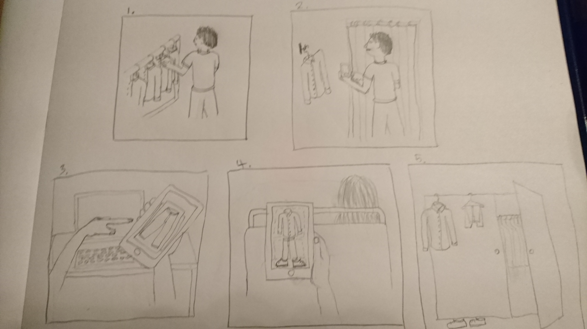

The below shows what I've done over four TMAs and over the course of this module
The problem that an interactive product could address is that after buying clothes and putting them in your wardrobe it is often easy to forget what clothes you have bought and what is in your wardrobe. This then results in a situation where you wear the same small selection of clothes each day. You then find that when you do have a good look through your wardrobe you find clothes that you have never warn or that you had forgotten you had. This problem is worth addressing because it is a waste of money buying clothes that you do not wear and wearing something new can be an enjoyable experience. Another problem is that it can be difficult to decide what clothes go with what without trying them on, and it can also be difficult to decide what clothes you want to wear that day or to a certain occasion. This is worth addressing because it will make people’s lives easier if they have help in deciding what to wear, and also it will save them time with making the decisions.
The interactive product that would be used to help resolve this problem would be an app on a phone or tablet that is a virtual wardrobe. This would work by there being a picture of each item of clothing that the user owns on the app, which can either be added by the user or downloaded automatically from the website (figure 1). This would make it possible for the user to keep track of all of their clothing in one place without having to physically look through their wardrobe, making it less likely that they will forget what they own. The app would also have a function where you can create your own outfit (figure 2) by putting different items of clothing together on one page. This would make it easier for the user to decide what to wear with what. A random button option on this part of the app could then give the user a fresh idea of what to wear, helping them with that decision and if all the clothes are tagged when they are added, such as #dayclothes, this would help with organising the clothes before the user makes their choice.
The usability and user experience goals this app should meet are, most importantly, efficiency as being quick and time saving is what will make it desirable to use. It also needs to be effective at showing the user all of their items of clothing in an organised, easy to view way, so as to make it a simpler and more enjoyable option than just going through their wardrobe. The app needs to be helpful by helping choose an outfit, and engaging so that users will keep adding items of clothing to it and using it regularly. It should also be rewarding by helping the user come up with an outfit that they would not have come up with otherwise. The app needs to be easy to learn, otherwise if it is too complicated people will not find it useful and they will not return to use it again. If the app is fun and exciting and it also supports creativity this will make the user want to use it again. Figure 1 shows the screen for viewing items of a certain type of clothes individually in a clear, easy to use lay out, which should be enjoyable to use. Figure 2 shows the “create an outfit” page, which should also be easy to use and enjoyable.
The user I will interview will be someone that is early 20s and interested in fashion, this is because they would be someone that would be most likely to benefit from the app and to use it most frequently. They will be male because it will be important to make sure that the app’s features also appeal to men as well as women. He will be someone that does plenty of online clothes shopping because this is what the websites that (may) endorse the product would expect the potential users to be doing.
I will record the data by using an audio recorder throughout the whole interview so that everything that is said can be listened back to. I will also have paper and a pen to write down any notes I think are worth taking during the interview.
The interviewee currently carries out the activity of deciding what to wear by either trying on something to see how it looks on him or just wearing something that he has worn before, he said that he “struggles to decide what to wear most days". The activity of keeping track of what he owns is also something he struggles with. When asked if he struggles to remember all the clothes that he has he said "definitely, all the time". He said that he struggles as he is unable to remember everything he owns, this then results in him wearing something from the same small selection of clothes each day. The interviewee considers this to be problematic because not being able to decide what to wear, or knowing what is in his wardrobe causes him a lot of stress, he states that "I spend ages stressing over what to wear to a meal and then last minute I see something I forgot I had and then I stress about it because I can't decide what to wear". An issue that arises from the interviewee not know what is in his wardrobe is that he often finds himself buying something similar to what he already has without realising it.
| James | "I love shopping, I’m always online buying clothes" |
|---|---|
| Background: | |
| Male | 22 years old |
| Good hearing | Motivations: |
| Ok eyesight, uses glasses | Desire to be the best |
| Keen user of technology | Frustrations: |
| Fashion enthusiast | Stressful situations |
| Regularly user of social media | |
| James spends a lot a time each day looking at clothes online, mostly shoes, to buy. He regularly attends social events with his friends at the weekends and likes to look at his best and wear something new as much as possible. He likes to wear the latest fashion and he likes his clothes to stand out but not too much. He spends a lot of time on social media and looking at celebrities fashion to get ideas for himself. When at home he finds the activity of deciding what to wear quite stressful as he often finds clothes he has forgotten he had and then struggles making the decision of what to wear. Although he struggles to decide what to wear he likes it to be him that makes the decision as it is satisfying. | |
I have a meal out planned this evening and whilst at work I have been thinking about what to wear but the only clothes I can think of wearing are clothes that I have already worn. I then have a look on some social media sites at what some celebrities I like are wearing. I then pretty much decide on an outfit to wear although I can’t decide what shoes go with it, so I will try on a few pairs when I have the outfit on later to see what ones go with the outfit. When I get home I get the clothes out the wardrobe but then I notice a new shirt that I haven’t worn yet which I think I might like to wear to the meal. I try it on and I remember what it was I liked about it when I bought it, however, I think it might be a bit too smart for this meal tonight. I then toy with the idea of dressing it down with more casual trousers whilst considering other possibilities. Whilst trying to decide I realise that time is getting on and the situation is causing me some stress. I decide to go with something that I have already worn, and was thinking about earlier, as I feel comfortable in it and I no longer feel stressed, although I do wonder when I will ever wear some of the new clothes that are still hanging in my wardrobe. I try on a few pairs of shoes, decide on the ones that look best and head out for the meal. Before heading out I consider taking a picture of my outfit to share with my friends but as they are clothes I’ve worn before I decide not to.
The requirements for my interactive product, the virtual wardrobe, are that users should be able to see all their items of clothing on the app so that they do not need to try and remember them all. Another requirement is that users are able to create an outfit with the app to see how clothes look together. It should also be possible for users to share the outfits they have created with friends and have this linked with social media sharing sites like Instagram.
The conceptual model for the interaction with the virtual wardrobe includes:
The interaction with the virtual wardrobe could happen in any environment as it is on a mobile device, this could be at home where the wardrobe is or in a public noisy place like a train or at work.
The virtual wardrobe will work with objects and concepts such as the user’s wardrobe and the items inside it, new clothing from websites and shops, and websites for sharing the images of outfits.
The actions carried out on these objects would be adding all the existing clothing from inside the wardrobe to the app, removing unwanted clothing, adding new clothing purchased and sharing the outfits to websites (which websites?).
The user experience would be fun, stress free, supports creativity, engaging, rewarding, supports sociability and it will help the user to be more organised when deciding outfits.
One interface type that could be used is a mobile interface. This would be an application on a mobile device, such as a phone or a tablet, containing the virtual wardrobe. This type of interface would require the users to be able see the screen and to use their hands to grasp the phone and fingers to control the application with gestures, which would make it possible to ‘flick’ through the clothes. ✓ They need to be able to see the screen. ✓ The device makes it possible to move around with it whilst trying on clothes. It requires users to be able to learn and remember how the device works and it can keep users attention and focus because the app takes up the whole screen and they are holding the device.
Another interface type is a web interface. ✓This would involve having the virtual wardrobe stored on a server and accessible through a website with a login and password. This type of interface would require its users to be able to use a keyboard and mouse, they could also use gestures on certain computers. ✓The users would not need to move to use this interface type but they could have to move quite a distance between their computer and their wardrobe. Users would need to remember their logins and how to use the site. ✓ The user may be distracted by another site or PC application so the website would need to be designed to keep their attention.

1. James goes clothes shopping on his lunch break
2. He buys a new shirt to wear to a meal out that evening. Whilst in the changing room he takes a picture of the shirt and uploads it to the virtual wardrobe app.
3. Whilst at work James looks through the virtual wardrobe at his trousers and shoes to remind himself of what he owns.
4. On the bus home from work he uses the app to create an outfit with the new shirt picture that he uploaded earlier.
5. When he arrives home he takes the trousers and shoes, that he has decided on wearing from using the app, out of the wardrobe and gets changed ready for his meal out.

The goals and questions of the evaluation of the virtual wardrobe app are to find out if the user can execute the main tasks efficiently. Is the layout of the app helpful when doing these tasks? Is it frustrating? Is it motivating? Does it support creativity? Is it enjoyable, fun and rewarding? This would show whether the app is designed well and is creating a good user experience.
The approach that I would use for the first stage of evaluation would be usability testing in a controlled environment. The methods I would use in the usability tests would be thinking aloud, to get the users opinions on the layout of the app and also how they feel about it. I would use observation to see how quickly they get to grips with using the app. I would also use interviews to get the users’ opinions of the app after they have used it.
The data that I need to collect would be mostly qualitative data from the notes I take during the think-aloud and observation tasks. I will also video the users undertaking the tasks so that I can watch the test again and pick up anything I’ve missed. I will gain timings with a stop watch on how quickly the users do a task. Some more quantitative data would be gained from counting how many presses of buttons it takes to complete a task. I will use a rating scale of 1 - 5 for the user experience goals data. The data from the interviews would be qualitative and I would use note taking and voice recording to collect it, as in this situation I don’t need to see the participant only hear what they have to say. The data will be collected in a controlled environment by the same evaluator.
I will analyse the data by looking for usability issues that have been mentioned by the users, after the task. I will look for common issues mentioned by more than one user and keep a track of which issues were mentioned the most. These can then be rated with the most mentioned issue listed first and the others in order below when it is presented. I will also add anecdotes to the presentation to show the issues in more detail. I will present the user experience data with the average ratings each goal received . The data gained from the timing task I will compare the first attempt to the second attempt per user as that will show if they have learnt the task, and I will compare the clicks with the minimum amount of clicks possible for the task.
The materials I will have for the evaluation will be in an evaluation script, this will include:
From doing the evaluation I have found that the process of added items of clothing to the app and creating an outfit is something that everyone tested found enjoyable, young and old, male and female. I have learnt that some features of the app are more appropriate for some users than for others, for instance, the older generation are not generally interested in sharing their outfits on social media but they do like the idea of being creative with their outfits. They also don’t know what a # tag is. I found that men and women often want different categories, e.g. ties for men and jewellery for women. I found that on the screen that shows all the tops the layout was inefficient as multiple users struggled to find the add button, and also the area for adding shoes on the ‘create an outfit’ screen wasn’t clear that it was for shoes.
The goal of being efficient was met because when all the users did the timed task a second time (what was this task?) they were around five times quicker completing the task compared to the first attempt, which also suggests that the app layout supports learning. The goals of the app being helpful, fun and rewarding were all met with users rating the app either 4 or 5 for all three goals. The question of the app supporting creativity was agreed by users that it would but this is only something that users could only imagine doing with a paper prototype. The app’s overall simplicity meant that no one found it frustrating.
Based on the evaluation I would prioritise for further development making the app customisable so that when people install it they can pick features they want and do not want, such as not having a sharing option and picking what clothing categories they want to have. This would also help with keeping the app layout simple and easy to use. ✓ I would want to redesign the tops page and the shoe area on the ‘create an outfit’ page, to make them easier to understand (in which way?). I would prioritise coming up with a good colour scheme and graphics to make sure that the app is appealing to users and enjoyable to use. ✓ I would also add a help section to give some detail about each available function to help users that are not sure how to use it.
The limitations of the evaluation are that as I do not have access to a laboratory the setting that I did use, people’s homes, had distractions in so the participants were not able to give the tasks their full attention. Although, this setting is a more realistic setting for where someone may actually use the app. Also as it was a very small sample the results are not generalisable to the general population. Having me as the evaluator may have biased the results as I may have focused on more positive aspects and asked leading questions. Also with the users being friends and family they would have wanted to give positive feedback to please me. The counting the clicks task was not necessarily accurate as I was observing whilst also counting. When there is a working prototype some software can be used to count the clicks so this will be more efficient.
From what I’ve learnt from the evaluation what I would do differently is that I would use more people from the target population, of young female adults, this would get more helpful relevant feedback, rather than just using family and friends. I would try to do the study in a place that has less distractions, like an office room somewhere, or a laboratory if possible. I would also get another person to be the evaluator to remove the bias of the users wanting to please me. Ideally I would have spent more time on the prototypes making sure that the buttons were clear and had universal symbols on them to help stop confusion. What would have made the task more realistic would have been having the screenshots on a mobile phone and the images linked together when people press a certain area where a button has been drawn, this would have made the task more believable for the users.